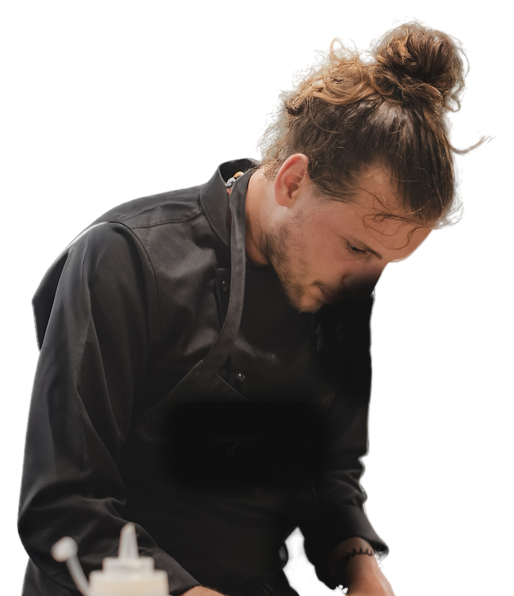

Bold flavours.Good people.Real moments.
I cook with instinct, memory, and a bit of mischief. Inspired by places, people, and the rhythm of the room.
Chef + executive chef
Restaurant operator
Culinary consultant
Ibiza + Formentera / food culture, people, good energy
food culture, people and good energy

I cook with instinct, memory, and a bit of mischief. Inspired by places, people, and the rhythm of the room.
food culture
people
and good energy
Chapter 01 / point of view
Tiago works where food, team rhythm, and room energy meet. The plate matters. So does the pass, the sourcing, the timing, the music, and the feeling when the night suddenly has a pulse.


Prototype map
Mira, Bottega il Buco, openings, menus, consulting, and kitchen coordination.
02 CollaborationsRestaurant/opening support and extraordinary food-led events.
03 GalleryFood, room, team, and table images with real texture.
04 MusicHow room rhythm supports food, gatherings, and hospitality timing.